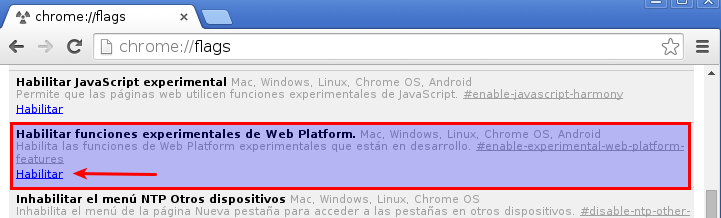

Unidad 2.2 - Diseño de layouts
Índice
1 Introducción
El layout o estructura de un interfaz web es la manera de organizar o disponer los elementos visuales en la página. El diseño del layout determina la posición de cada uno de los elementos que componen el interfaz web (cabecera, menús, banners, contenido, etc.).
Además, el diseño del layout comprende también una serie de decisiones que afectan a las siguientes características:
- Tamaño de los márgenes.
- Tamaño y posición de imágenes y figuras.
- Número de columnas (o áreas) en que se divide la página.
- Áreas dejadas en blanco intencionadamente.
2 Santo Grial
Uno de los patrones de diseño más utilizados es un diseño formado por varias (normalmente tres) columnas, con el contenido principal ocupando una de ellas (normalmente en el centro) y el resto de elementos (menús, banners,…) en las otras columnas. Las columnas idealmente deben tener la misma altura independientemente de su contenido y opcionalmente pueden tener bordes o colores de fondo diferenciados.
Aunque parece sencillo de conseguir, no hay ninguna solución óptima para este diseño. Todas ellas tienen algún inconveniente:
- Visualización incorrecta en algún navegador.
- Utilización de muchas etiquetas HTML.
- Utilización de etiquetas HTML sin significado semántico (es decir, que se utilicen no para estructurar el contenido, sino para alterar la apariencia visual).
- Adaptación incorrecta en dispositivos móviles.
- Necesidad de utilizar lenguaje de script.
3 Métodos antiguos
3.1 Tablas
3.2 Posicionamiento absoluto
- Rígido e inflexible.
- Utilizado para versiones que deban ser impresas
- Unidades de medida absolutas (cm, mm,…).
3.3 Anchura fija
- Muy popular.
- Se crea una capa contenedora que alberga todo el contenido de la página.
- Se asigna una anchura fija al contenedor: típicamente un tamaño de 980px, 960px o 760px.
- El contenedor se centra automáticamente cuando se muestra en una pantalla grande.
- Aparece una barra de desplazamiento horizontal cuando se muestra en una pantalla pequeña.
- Utiliza el píxel como unidad de medida principal.
Ventajas:
- Ajuste perfecto. Son sitios que hacen uso de gran cantidad de imágenes y estructuras muy complejas. Necesitan controlar exactamente el tamaño de las capas para que las imágenes acoplen perfectamente.
- Fácil de desarrollar y mantener.
Desventajas:
- Poco usabilidad en pantallas pequeñas.
- No se adaptan correctamente a dispositivos móviles.
- No se adaptan correctamente frente a un aumento de zoom o aumento del tamaño del texto.
Ejemplos:
4 Métodos actuales
Los métodos actuales de diseño de layouts suelen tener las siguientes características:
- No utilizan anchuras fijas.
- Se adaptan correctamente a pantallas pequeñas y grandes.
- Utilizan unidades CSS relativas (ems, rems, porcentajes, valores mínimos y máximos,…).
- Utilizan media queries CSS3 (profundizaremos en ello en futuros temas).
4.1 Layout fluido (líquido)
- Utilizan unidades de medida basadas en porcentajes. El tamaño de los elementos está basado en el tamaño de los contenedores.
- Los elementos ocupan el mismo espacio independientemente del tamaño de la pantalla.
- Son la base para otros métodos modernos.
Ventajas:
- Buen manejo de los espacios en blanco.
- Más sencillo de utilizar que otros métodos.
Desventajas:
- La usabilidad en pantallas muy pequeñas o muy grandes no es demasiado buena.
- Utilizan anchura mínima o máxima para que no se desajuste demasiado el contenido.
- No hay un cambio real en la experiencia de usuario: sólo una adaptación de los tamaños. Por tanto, no hay una adaptación real a distintos tipos de dispositivos.
Ejemplos:
4.2 Elástico
- Utiliza la unidad de medida "em".
- El layout se ajusta al contenido.
- La anchura viene determinada por el tamaño de la fuente en el navegador del usuario.
- Se utilizan para páginas con gran contenido de texto.
- No se utiliza demasiado para el resto de sitios web.
Ventajas:
- Muy buena accesibilidad para el contenido.
- Buen control tipográfico.
- Se adaptan muy bien a pantallas pequeñas y grandes.
Desventajas:
- No tiene mucha utilidad aparte de sitios con gran contenido de texto.
- Difícil de desarrollar y mantener.
4.3 Adaptativo
- Optimizado para resoluciones de pantalla específicas (las más habituales: teléfonos, tablets, tablets apaisadas, pantallas y pantallas grandes).
- Utiliza layouts fijos o fluidos dependiendo del dispositivo.
- Utiliza media queries CSS3 para proporcionar versiones distintas a cada dispositivo.
- Cada dispositivo carga el layout que más se adapte a él.
4.4 Responsivo
- Va un paso más allá del layout adaptativo.
- No hay resoluciones de pantalla específicas.
- La página entera es libre de fluir y adaptarse al espacio.
- Utiliza sobre todo layouts fluidos.
- Utiliza imágenes de tamaño flexible.
- Utiliza media queries CSS3 para corregir los errores que se producen en los puntos de ruptura del layout.
Ventajas:
- Muy buena experiencia de uso independientemente del dispositivo o tamaño de pantalla elegido.
Desventajas:
- Todos los dispositivos reciben todo el código independientemente de si lo van a utilizar o no.
- Difícil de desarrollar y testear.
- No hay un control perfecto a nivel de píxel: por tanto, puede ser difícil adaptar imágenes de tamaño fijo.
Ejemplos:
4.5 Conclusiones
Independientemente del modelo de layout elegido, el objetivo que se persigue es:
- Proporcionar a los usuarios una buena experiencia de uso.
- Servir una página web que funcione y se comporte de manera óptima independientemente del dispositivo o tamaño de pantalla utilizado sin comprometer la experiencia de uso.
5 Técnicas para crear layouts
En la actualidad existen muchas maneras de crear layouts utilizando CSS. A las técnicas tradicionales (float, inline-block) se suman otras nuevas aportadas por CSS3 (como flexbox) o el futuro modelo de rejilla.
En este enlace puedes consultar un tutorial de diseño de layouts: http://es.learnlayout.com/toc.html
En el este enlace puedes consultar una comparativa de los distintos métodos, que resumiremos en este apartado.
5.1 Float
Se utilizan para layouts que no necesitan centrado vertical ni alturas de capas iguales.
Ventajas:
- Método más popular.
- Al ser el método más popular, los fallos que se producen están muy bien documentados y se han desarrollado muchos métodos para corregirlos.
Desventajas:
- Necesitan ser reseteados (clearfix). Si se utilizan media queries para personalizar la apariencia en función del dispositivo será necesario hacer un clear para cada adaptación.
- No se pueden alinear en vertical.
- Las alturas de las capas no son iguales.
- Dependen del orden en que aparezcan las capas en el HTML.
5.2 Inline-block
Se utilizan cuando se necesitan layouts con las siguientes características:
- Sitios que necesitan alineación vertical.
- Para evitar tener que realizar el clear de los floats cuando se utilizan media queries.
- Para realizar menús horizontales utilizando listas.
Ventajas:
- Posibilidad de alineación vertical.
- No necesitan hacer clear en diseños complejos adaptados a muchos dispositivos con media queries.
Desventajas:
- Las alturas de las capas no son iguales.
- Dependen del orden en que aparezcan las capas en el HTML.
- Tienen un fallo que consiste en crear un espacio en blanco adicional (whitespace bug) entre los elementos. La solución si utilizamos listas consiste en utilizar tipos de documento HTML5 y no cerrar los elementos
<li>. En este enlace se muestra el problema.
Ejemplo de galería con inline-block: http://karenmenezes.com/inlineblockgrid/
5.3 Display table
La propiedad display: table automáticamente transforma la apariencia de una capa en la de una tabla. De esta manera se consigue un diseño basado en columnas de manera muy sencilla sin tener que utilizar tablas reales (que, recordemos, no son recomendables).
Sin embargo, para tener un control total es necesario replicar la estructura de una tabla utilizando divs, por lo que se termina cayendo en el mismo error que al diseñar utilizando tablas.
<div class="tableWrap"> <div class="tableBlock"> <div class="tableRow"> <div class="tableCell"> </div> <div class="tableCell"> </div> <div class="tableCell"> </div> </div> <div class="tableRow"> <div class="tableCell"> </div> <div class="tableCell"> </div> <div class="tableCell"> </div> </div> </div> </div>
Ventajas:
- Posibilidad de alineación vertical.
- Permite crear capas de alturas iguales.
Desventajas:
- Es necesario crear
<div>adicionales para simular la estructura de las tablas. No obstante, la especificación indica que no es obligatorio. - Dependen del orden en que aparezcan las capas en el HTML.
- Para separar las celdas no se pueden utilizar los márgenes: hay que utilizar la propiedad
border-collapsedel elemento padre. - Es posible que el contenido traspase los límites de las celdas.
- Es difícil de adaptar para crear diseños responsivos con varios puntos de ruptura.
- Problemas con IE6 y IE7.
5.4 Cajas Flexibles (FlexBox)
FlexBox ofrece un mecanismo muy completo para realizar layouts. Tiene una gran variedad de opciones y es muy versátil.
Para aprender a manejar FlexBox se pueden consultar estos tutoriales:
- http://demo.agektmr.com/flexbox/
- https://developer.mozilla.org/es/docs/Web/Guide/CSS/Cajas_flexibles
Ventajas:
- Independencia del orden en que aparezcan las capas en el HTML. Elimina la necesidad de utilizar JavaScript para esto.
- Ofrecen alineación vertical.
- Permiten crear capas con la misma altura.
- Permiten la estructura en filas o columnas de manera sencilla.
- Ofrecen una gran flexibilidad en cuanto a las opciones a utilizar.
- Las cajas pueden ocupar automáticamente el espacio disponible, crecer o menguar a petición.
Desventajas:
- Existe una especificación inicial que ha quedado desfasada (hay que tener cuidado al buscar tutoriales en Internet).
- La sintaxis es algo compleja.
- Es necesario utilizar prefijos para soportar todos los navegadores.
- No es compatible con IE9 y anteriores.
5.5 Grid layout (en borrador)
El modelo de Grid Layout (rejilla) es un modelo que está actualmente en desarrollo. Su funcionamiento consiste en definir una serie de zonas dispuestas a modo de rejilla para a continuación asignar cada capa o sección a la zona correspondiente. El borrador de la especificación está disponible en http://www.w3.org/TR/css3-grid-layout/.
Tiene múltiples ventajas, entre las que destacan las siguientes:
- Eliminación total de la necesidad de definir capas contenedoras. Bastará con tener una capa para cada área independiente de la página.
- Independencia del orden en que aparezcan las capas en el HTML.
- Independencia completa entre HTML y presentación visual.
Todavía no ha sido implementado de manera estándar por los navegadores. Sólo está soportado por el navegador Internet Explorer 11 (aunque soporta una versión desfasada de la especificación) y el navegador Chrome de manera experimental (para ello hay que activar la característica "Habilitar funciones experimentales de Web Platform" en el menú chrome://flags.

Figura 3: Activación de CSS Grid Layout en Chrome
6 Algunos consejos de diseño
- Los bloques que aparecen uno debajo del otro no presentan problemas: se muestran correctamente si son
display: block(recordemos que estos elementos introducen saltos de línea, por lo que se muestran uno a continuación del otro). - El problema aparece cuando tenemos capas que deben aparecer a la derecha o izquierda de otras. En ese caso tendremos que utilizar alguno de los métodos propuestos.
- La manera más sencilla de diseñar el layout consiste en hacer agrupaciones por filas o columnas:
- Se deben buscar las filas que lleguen a los extremos de las capas contenedoras.
- Dentro de cada fila se procederá a agrupar por columnas que lleguen a su vez a los extremos de los contenedores.
- Se continuará de esta manera (filas, columnas,…) hasta completar el diseño.
Por último, es recomendable pensar en el layout más adecuado para dispositivos móviles o pantallas pequeñas. Este tema será abordado con más detalle en unidades posteriores.
7 Referencias
- http://es.slideshare.net/HarshalPatil4/css-layout-techniques
- http://www.maxdesign.com.au/articles/css-layouts/
- http://designshack.net/articles/css/farewell-floats-the-future-of-css-layout/ (ojo, el modelo de
flexboxdescrito en este artículo es un modelo antiguo que ya no se utiliza). - http://blog.karenmenezes.com/2014/apr/13/floats-inline-block-or-display-table-or-flexbox/

{kind=link}
{kind=link}
{kind=link}